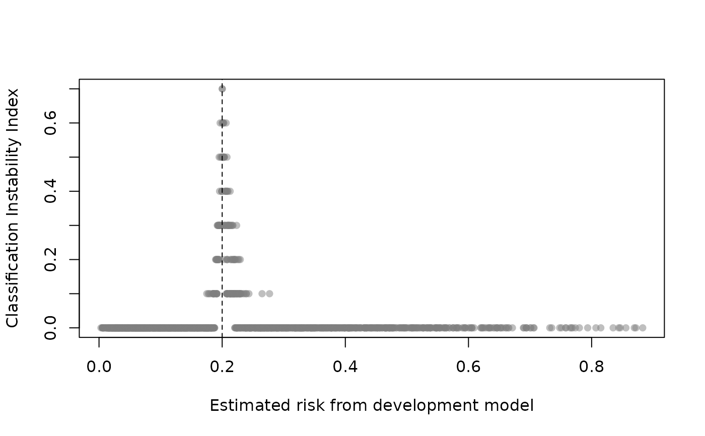

Classification instability plot shows the relationship between original model estimated risk and the classification instability index (CII). The CII is the proportion of bootstrap replicates where the predicted class (0 if p <= threshold; 1 if p > threshold) is different to that obtained from the original model. Those with risk predictions around the threshold will exhibit elevated CII but an unstable model will exhibit high CII across a range of risk predictions. See Riley and Collins (2023).
Usage
classification_stability(
x,
threshold,
xlim,
ylim,
xlab,
ylab,
pch,
cex,
col,
subset,
plot = TRUE
)Arguments
- x
an object produced by
validatewith method = "boot_*" (orboot_optimismwith method="boot")- threshold
estimated risks above the threshold get a predicted 'class' of 1, otherwise 0.
- xlim
x limits (default = range of estimated risks)
- ylim
y limits (default = c(0, maximum CII))
- xlab
a title for the x axis
- ylab
a title for the y axis
- pch
plotting character (default = 16)
- cex
controls point size (default = 1)
- col
color of points (default = grDevices::grey(.5, .5))
- subset
vector of observations to include (row indices). This can be used to select a random subset of observations.
- plot
if FALSE just returns CII values (see value)
References
Riley, R. D., & Collins, G. S. (2023). Stability of clinical prediction models developed using statistical or machine learning methods. Biometrical Journal, 65(8), 2200302. doi:10.1002/bimj.202200302
Examples
set.seed(456)
# simulate data with two predictors that interact
dat <- pmcalibration::sim_dat(N = 2000, a1 = -2, a3 = -.3)
mean(dat$y)
#> [1] 0.1985
dat$LP <- NULL # remove linear predictor
# fit a (misspecified) logistic regression model
m1 <- glm(y ~ ., data=dat, family="binomial")
# internal validation of m1 via bootstrap optimism with 10 resamples
# B = 10 for example but should be >= 200 in practice
m1_iv <- validate(m1, method="boot_optimism", B=10)
#> It is recommended that B >= 200 for bootstrap validation
classification_stability(m1_iv, threshold=.2)
